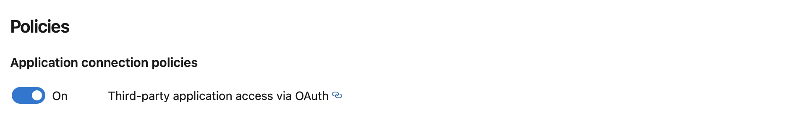

Module 2: GitHub with Azure DevOps
Azure DevOps provides developer services for support teams to plan work, collaborate on code development, and build and deploy applications. Azure Boards delivers a suite of Agile tools to support planning and tracking work, code defects, and issues using Kanban and Scrum methods.
By connecting Azure Boards with GitHub repositories, you enable linking between GitHub commits, pull requests, and issues to work items. You can use GitHub for software development while using Azure Boards to plan and track your work. Azure Boards provides the scalability to grow as your organization and business needs grow.
This module will provide an understanding of:
- How to effectively configure ADO Boards againts a GitHub repository, to better plan and track progress of the team's work.
- How to configure Azure Boards app in the Microsoft Teams collaboration channel to create work items and monitor the activity from Teams.
Exercise 1: GitHub repository - ADO Boards
GitHub projects feature has recently been evolved with new capabilities like issue hierarchy and project roadmaps. Make sure you review them to understand how continuous planning can be handled with GitHub. In this labs, because there are some hybrid scenarios where ADO and GitHub co-exist, we are leveraging ADO Boards for Continuous Planning. However, it is important to keep track of any commits and pull requests related to a specific User Story. This is why, we need to configure our GitHub repository against our Azure DevOps Board.
To complete this exercise, you will connect your GitHub Repository against your Azure DevOps project, so changes in the code can be linked to existing work items.
Prerequisites - Exercise 1
- An Azure Boards or Azure DevOps project needs to exist.
- Project Administrators and project's Contributors group memberships are required in the ADO project.
- GitHub repository owner role is required in the Coupons repository.
Open the Azure DevOps Project.
Go to Project settings > Github connections > Connect your Github account.
Note
> For "Connect your GitHub account" option to be visible you need to have admin rights on the ADO project.

Connect with your GitHub credentials. If this is your first time connecting to GitHub from Azure Boards, you will be asked to sign in using your GitHub credentials. Choose an account for which you are an administrator for the repositories you want to connect to. If you have enabled two-factor authentication, enter the authentication code that GitHub sent you and choose Verify.
Select the GitHub organization.
Select the Coupons repository from the drop down list and click save.
Review the GitHub page that displays and then choose Approve & Install.
Provide your GitHub password to confirm if required.
When done, you should see the new connection with the selected repositories listed.
Going back into the GitHub repository, click on settings > integrations. You should see Azure Boards included as an installed GitHub app.
Note
In further labs (CI/CD/CQ/CS/CO) we will see how to link commits and pull requests to a specific work item created in Azure DevOps board. Stay tuned for amazing integrations 🚀!
Exercise 2: Microsoft Teams - ADO Boards App
If you use Microsoft Teams, you can create work items and monitor work item activity in your Azure Boards project from your Teams channel. You accomplish this by adding the Azure Boards app for Microsoft Teams to your Teams channel.
The Azure Boards app for Microsoft Teams enables users to perform the following tasks:
- Set up and manage subscriptions for creating and updating work items
- Manage other work item events
- Receive and manage notifications for work item events in their Teams channel
- Create work items from conversations in the channel
- Search and share work items with other members in the channel using the messaging extension
- View work item previews from their URLs to initiate discussions and keep the conversations contextual.
To complete this exercise, you will install the Azure Boards App in one of your channels and configure it to receive notifications your Azure board.
Prerequisites - Exercise 2
- Microsoft Teams must be installed.
- A team must be created for this lab, with 1 channel to receive ADO Boards notifications.
Open the Microsoft Teams application.
From your Apps, search Azure Boards.
Select Azure Boards App published by Microsoft Corporation.
To add this into the channel which you created in the prerequisites, click on the down arrow and select Add to a team.
Search for the channel name (Depending on the team you are in, for e.g. If you are in Team A, configure this is Team-a channel), and select Set up a bot.

Lets configure the Azure Boards app to receive notifications from a particular GitHub repository. To ensure the Teams
Azure Boardsapplication can connecto to ADO, ensure the ADO organisation policy should be configured to allows 3rd party application access via OAuth. You can check this inorganization settings -> policies.
Type the following command in the channel conversation:
@Azure Boards signin. If not already logged in, provide your Microsoft credentials.Type
@Azure Boards subscriptions. Channel shouldn't be linked to any ADO project. Link it to the ADO project by typing@Azure Boards link https://dev.azure.com/{org_name}/{project_name}Important
If you see the Configuration failed. Please make sure that the organization '{organization name}' exists and that you have sufficient permissions please follow this instructions to make sure you have the right tenant configure for your account.
Note
Depending on your setup and the team you are in, enter appropriate org_name & project_name. This can be found in technology section.

Click on the Add subscription button. Select Work item created from the dropdown many and then choose your team's are path and click submit. Repeat this operation for Work item deleted and Work item updated.
Now whenever an update is made to a work item, that will be notified directly in this teams channel. Thus teams can start discussions based on these notifications and take actions right away. An example is shown below:
You will see this in action as we start using GitHub in Continuous Planning Lab, and at the time of creating new work items, notification will pop in this teams channel notifying the members about the work item and any updates. So stay tuned, a lot to learn and experience along the way.
Key Takeaways
- GitHub repositories can be linked to Azure DevOps Boards, taking advantage of all the Continuous Planning functionalities of ADO, by using GitHub connections.
- Azure DevOps Boards can be connected with Microsoft Teams channel using Azure Boards App, so that notifications about various actions like new/updated/deleted work items, directly into the teams channel.